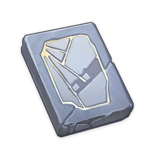

Inazuma · Books & Literature
The Byakuyakoku Collection
This five-volume Enkanomiya collection brings together a Watatsumi folktale, a contested ancient chronicle, local studies, vishap research, and a ciphered puzzle book.

A Collection, Not a Single Chronicle
The Byakuyakoku Collection is a five-volume set associated with Enkanomiya and assembled through the Collection of Dragons and Snakes quest. Its books do different jobs: a Watatsumi folktale, a chronicle, a study of Enkanomiya’s geography, experimental records, and a puzzle book. The set is valuable precisely because it preserves different voices and forms, rather than one neutral account of the past.
The writers are not named as a single author. The books describe themselves as records made by scribes and researchers across different periods; Volume III also says its text was repeatedly edited and renamed.
Volume I: The Serpent and Drakes of Tokoyokoku
This Watatsumi folktale recounts the oppressive first Sunchild and the sage Aberaku, then tells of a young Enkanomiyan who meets a great serpent in the depths and asks it to become his people’s god. The story presents the serpent’s arrival as a turning point in Enkanomiya’s history, but it remains a tale framed by the book as a folktale.
Volume I is useful for understanding how Watatsumi tradition remembered the earlier kingdom. Read its narrative form alongside the other records rather than treating every line as an eyewitness chronicle.
Volume II: Before Sun and Moon
The best-known volume is a restricted chronicle that combines fables and history. It describes the Primordial One’s arrival, a war against seven dragon Sovereigns, four shining Shades, the creation of life, and a later conflict with a second heavenly throne that left the ancestors of Enkanomiya in the depths.
The book itself says the Primordial One “may have been Phanes,” so that identification is not stated as certain. It calls the later opponent only a “second throne”; it does not name that being. These are claims preserved in an Enkanomiyan text, not a complete, independently verified history of the world.
The chronicle also describes the construction of Helios, later called the Dainichi Mikoshi, and encodes the name Istaroth in reverse as “Htoratsi.” Its parables and calendar entries should be read in their own terms; they do not identify every character in later lore by implication.
Volume III: Hydrological Studies in Byakuyakoku
This practical and historical study describes Enkanomiya’s landscape and its relationship to wind and water. It records that the Dainichi Mikoshi was first called Helios, and distinguishes the imaginary serpent Ouroboros, worshipped at the Serpent’s Heart, from Orobashi, the coral-adorned serpent who came to rule Watatsumi.
The volume also traces changes in the book’s own name—from Aphotic Earth to Tokoyokoku and then Byakuyakoku—showing that its contents and terminology were revised over time.
Volume IV: Bathysmal Vishap Experimental Records
These research notes document experiments on Bathysmal Vishaps directed under Orobashi’s authority. The records discuss changes in their traits and reproduce a prophecy that the Dragon Sovereign of Water would be born in human form, alongside the researchers’ determination to prevent that outcome.
The text records an attempted intervention, not proof that the prophecy was prevented. Its statements about vishap traits and the researchers’ motives belong to the in-world document and should not be extended beyond what it says.
Volume V: In the Light, Beneath the Shadow
The final volume is a puzzle book using Enkanomiyan names and a cipher. Its questions preserve clues about the Dragonheirs, Tokoyo Ookami, and the culture that produced the collection. One riddle calls Tokoyo Ookami the “mother” of fourteen billion years; the book presents that line as a puzzle, not a complete cosmological explanation.
Taken together, the five books preserve Enkanomiya’s stories, claims, research, and uncertainties. Their differences in genre and date are part of the evidence, and none turns the collection into an all-knowing account of Teyvat.
This is an original CoreGG reading guide, not an official HoYoverse article or a reproduction of the game text. Source links below identify the records used so you can check the original context.
Sources & references
Check these sources for the original game text and reference trail.